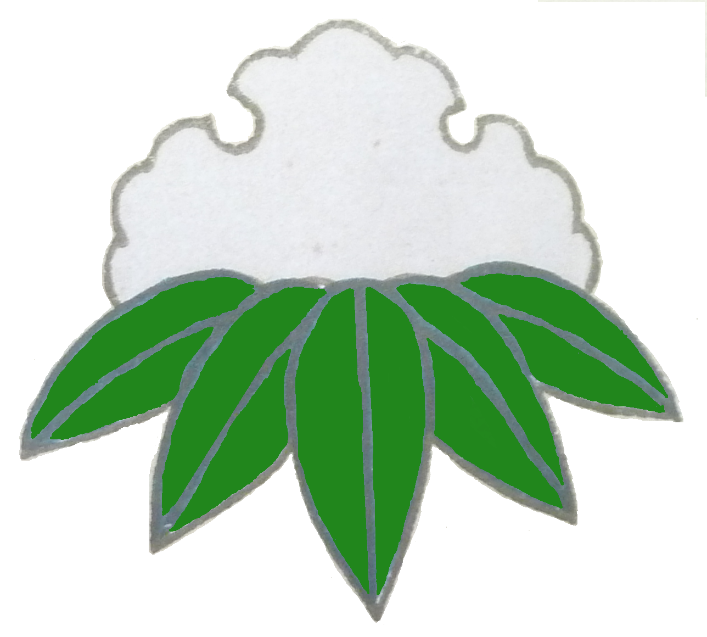
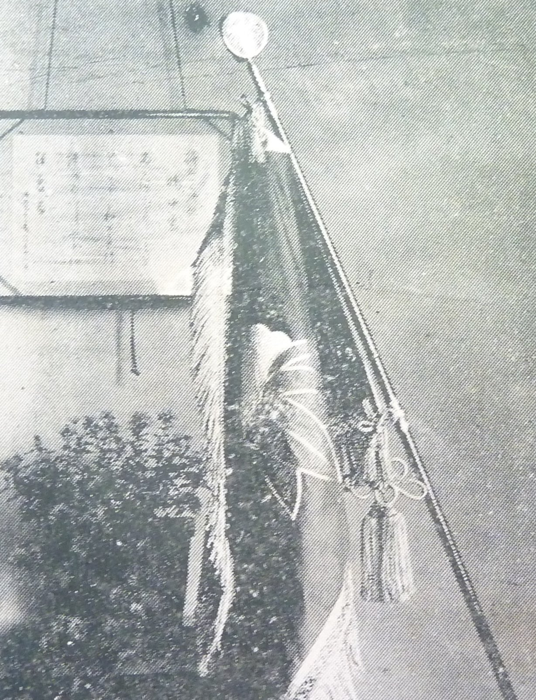
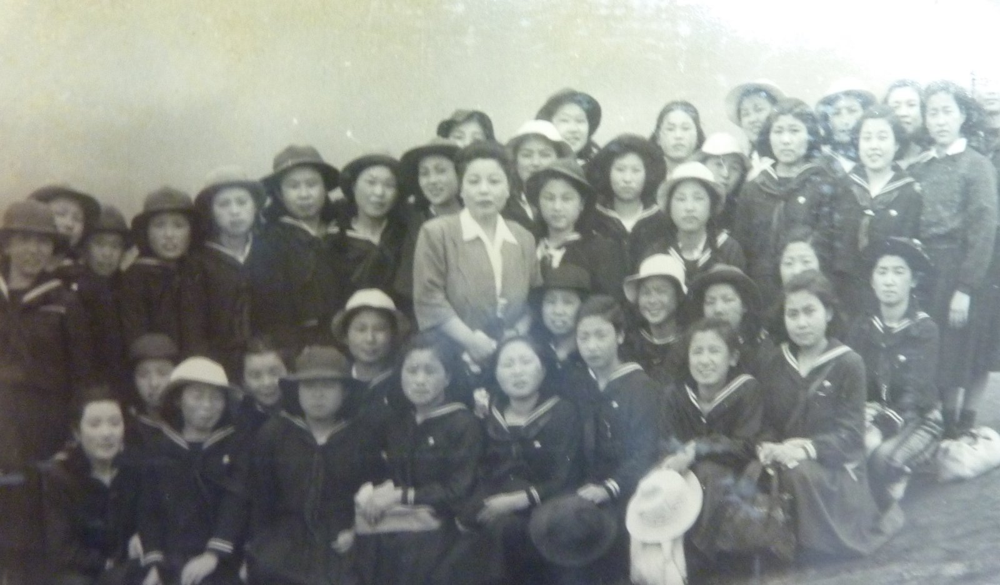
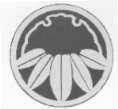
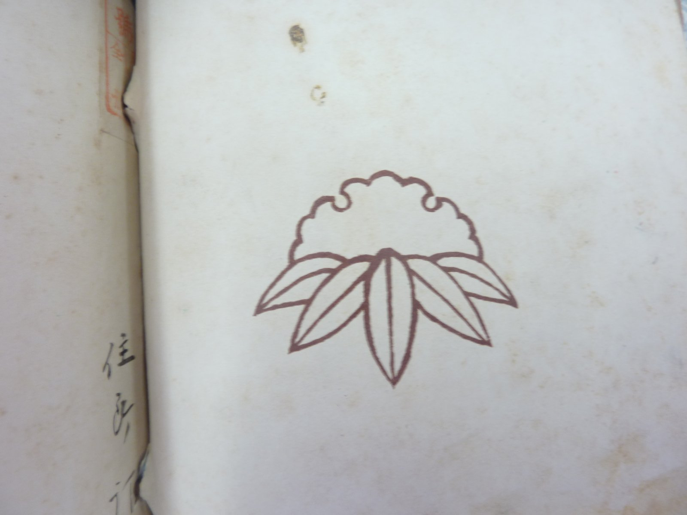
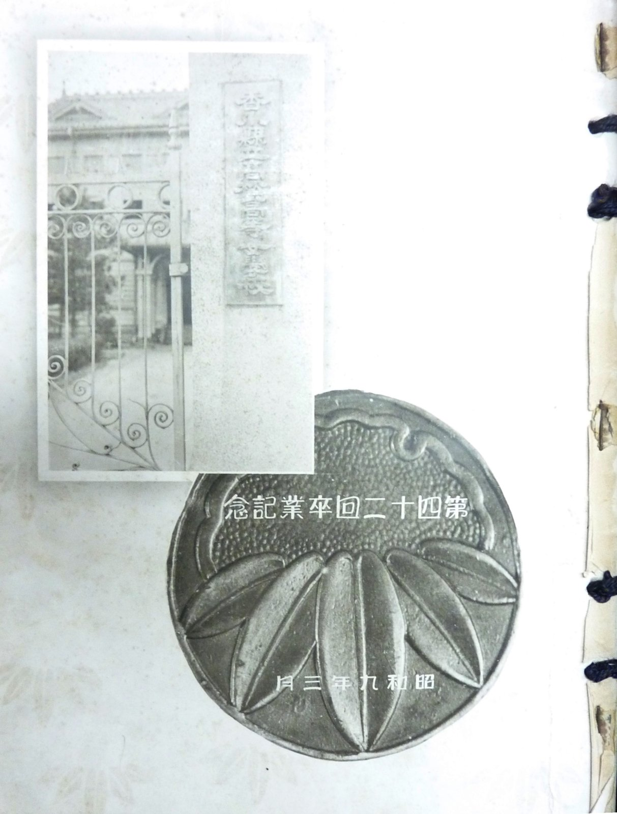

「雪持ち笹」の歴史

高松高校の女生徒の校章は「雪持ち笹」であり、これは高松高女の校章から引き継がれたものです。
その「雪持ち笹」が、いつ制定され、どのように使われてきたのか、本来のデザインはどれかなどを調べました。
校章（雪持ち笹）の制定
「雪持ち笹」が校章として制定されたのは明治34年6月です。
『晩翠』25号(S6.12.20発行)の高松高女沿革史を見ると、「明治34年6月 本校生たることの識別を容易ならしむるため、雪持笹の徽章（きしょう）を佩用（はいよう）せしむ。」とあります。なお、「佩用（はいよう）」とは「体につけて用いること」の意です。
この年、卒業生のために職員が寄せ書きをしたのですが、絵画教師の中川愛梅氏が描いた雪にたわむ竹の姿が生徒の心に深い印象を与え、校章の制定が叫ばれていたときでもあり、これを図案化し校章としたものです。雪の白さは乙女の「純潔」を、雪にたわむ笹の姿は「忍耐」を表しています。（「創立110周年記念誌」より）
徽章として「雪持ち笹」を廃止
ところが、前記の高松高女沿革史には「明治40年1月1日 従来の徽章を廃し、袴に白テープ一本を附けしむ。」とあります（『晩翠』25号(S6.12.20発行 高松高女沿革史）。
「従来の徽章」とは「雪持ち笹」のことでしょうから、「雪持ち笹」を徽章として廃止し、「袴に白線一本」を新たな徽章としたということのようです。
ただ、「徽章（きしょう）」とは、通常は「職業・身分・所属などを示すために帽子や衣服などにつけるしるし。バッジ。」を意味しますので、バッチとしては廃止したとしても、それ以外の使用について「雪持ち笹」がどのように取り扱われたのかは明らかでありません。
その後の「雪持ち笹」の使用状況

雪持ち笹の校旗
『晩翠24号』(S5)より
吊り上げた幕に雪持ち笹が見えます
昭和6年 創立40周年記念式典

胸に雪持ち笹のバッチ(S24) 「雪持ち笹」を徽章として廃止した明治40年の直後である明治43年、『晩翠7号』(M43.12.25発行)の裏表紙に「雪持ち笹」が使われています（ちなみに、『晩翠』に「雪持ち笹」が掲載されたのはこのときが初めてです。）。
その後、『晩翠』には「雪持ち笹」が何度も使用されています。
また、校旗には「雪持ち笹」が用いられています（『晩翠24号』(S5.12.15発行)掲載の写真)。
さらに、講堂の幕にも「雪持ち笹」が見えます。（『晩翠25号』(S6.12.20発行)掲載の写真）
このようなことから、「雪持ち笹」を徽章として廃止した後も、校章として取り扱われていたようです。
さらに、高松高女の卒業アルバムを見ると、昭和17年までは、胸に「雪持ち笹」のバッチをしている写真はないのですが、昭和17年3月の卒業アルバムの個人写真では、3分の2の卒業生が胸に「雪持ち笹」のバッチを付けていました。
また、昭和24年の集合写真では、4分の3の生徒が胸に「雪持ち笹」のバッチを付けています。
したがって、昭和17年頃には、「雪持ち笹」は徽章としても復活していたように思われます。
「雪持ち笹」のデザイン

高松高女の「雪持ち笹」のデザインには、丸がない雪持ち笹（右の写真上 以下「丸なし雪持ち笹」といいます。）と、丸に雪持ち笹（右の写真下 以下「丸に雪持ち笹」といいます。）の二種類あるようです。そこで、いずれが本来のものか調べてみました。
玉翠会館会議室にある卒業アルバムと『晩翠』を調べた限りでは、「雪持ち笹」の初見は『晩翠3号』(M36.8.25発行)であり、デザインは「丸なし雪持ち笹」でした。

『晩翠3号』裏表紙

卒業アルバム(S9.3) その後も『晩翠』に使われている雪持ち笹は「丸なし雪持ち笹」です。
また、校旗や講堂の幕に使われているのは「丸なし雪持ち笹」です。（上記の校旗と講堂の写真参照）
「丸に雪持ち笹」の初見は、第42回卒業アルバム(S9.3)の右の写真及び裏表紙です。その後、昭和16年の卒業アルバムまで裏表紙に「丸に雪持ち笹」が使われていました。
しかし、昭和17年の卒業アルバムの裏表紙には「丸なし雪持ち笹」が使われており、それ以降は「丸に雪持ち笹」は使われていませんでした。
さらに、昭和17年3月の卒業アルバムの個人写真や昭和24年の集合写真（上の写真）では、現在のバッチと同様の「丸なし雪持ち笹」のバッチを付けていました。
そうすると、いずれが正式かまでは不明ですが、一般的に使われていたのは「丸なし雪持ち笹」のようです。